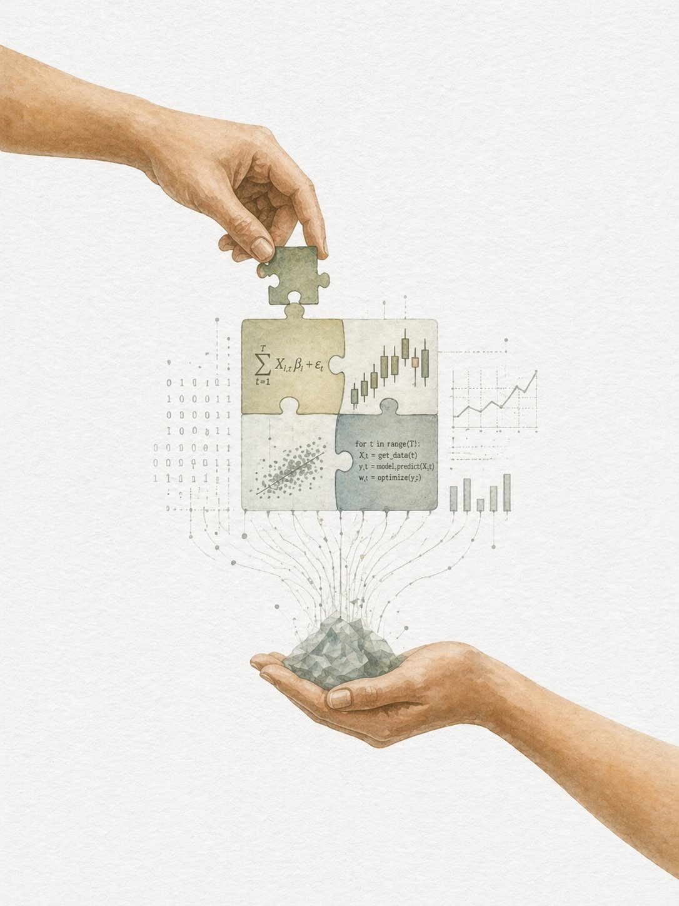

Inicio
Análisis
Macro
Educación
Blog de mercados financieros
Análisis, macro y educación para inversores
Contenido riguroso sobre mercados locales e internacionales, política económica y conceptos clave para tomar mejores decisiones.
"
El mercado puede permanecer irracional más tiempo del que vos podés permanecer solvente.
— John Maynard Keynes
Análisis
Mercados & activos
Análisis técnico y fundamental de acciones, bonos y commodities locales e internacionales. Seguimiento de resultados corporativos y flujos de capital.
Ver todos los análisis →

Macro
Economía global
Política monetaria, inflación, tasas y ciclos económicos. Argentina y el mundo bajo la lupa: qué mueve los mercados más allá de los balances.
Ver análisis macro →
Educación
Conceptos clave
Desde cómo funciona una opción hasta qué es el riesgo sistémico. Para todos los niveles, sin jerga innecesaria y con ejemplos reales.
Ir a educación →